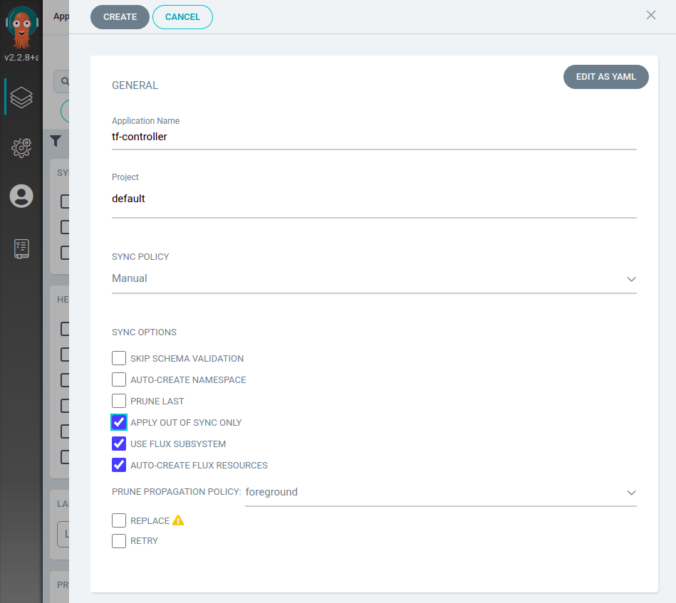
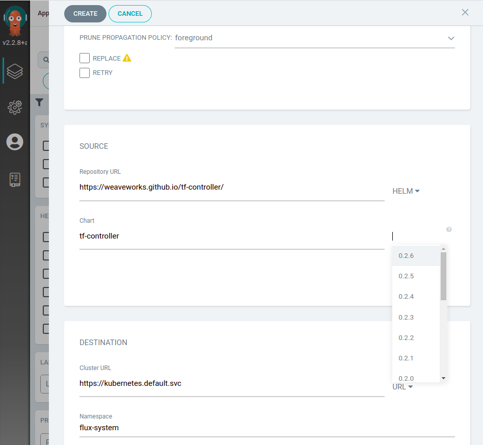
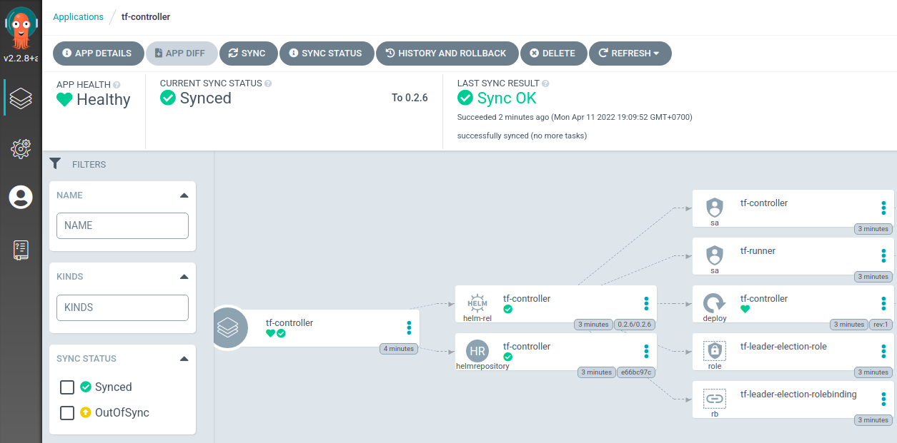
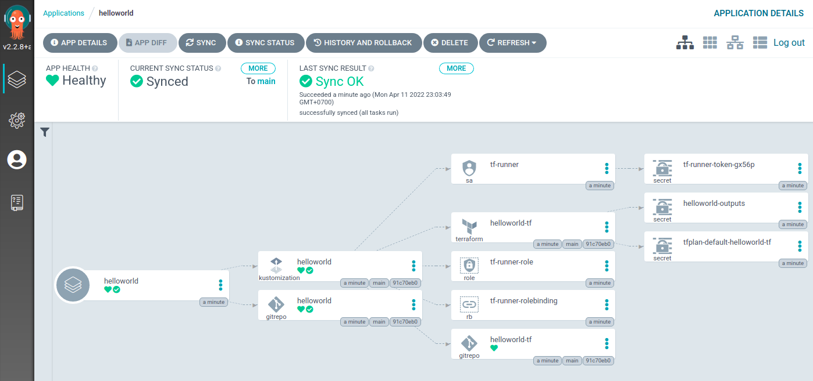

GitOps Terraform Resources with Argo CD and Flux Subsystem for Argo
⏲️ Estimated time use: 12 minutes.
This is a tutorial to show how could we use Flux Subsystem for Argo (FSA) to bring the Terraform management feature from the Flux world to your Argo CD UI. In order to do so, we need Weave GitOps Terraform Controller to help us reconcile our Terraform resources.
What is Weave GitOps Terraform Controller?
Weave GitOps Terraform Controller aka Weave TF-controller is a Kubernetes controller that allows us to GitOpsify Terraform resources without rewriting them to YAML files. We can use Weave TF-controller in any GitOps environment managed by Flux or Argo CD. In this tutorial, we use FSA to bring Weave TF-controller to Argo CD.
Tools used in this tutorial
We use the following tools in this tutorial.
- A Kubernetes cluster. EKS on AWS, or
kindon your desktop. - Argo CD v2.2.8
- Flux v2 0.28.5
- Flux Subsystem for Argo FL.1
- Weave GitOps Terraform Controller v0.9.3 or later
kubectlkustomizeyq(optional)
Create a new KIND cluster
If you already have a kind cluster you can skip this step.
Also, if you'd like to use Kubernetes on a cloud like EKS on AWS, you can skip this step as well.
To create a new kind cluster, please install kind CLI and run the following command.
kind create cluster
Install Argo CD
We use the official Argo CD instructions to install Argo CD. If you already have Argo CD v2.2.8 installed, you can skip this step. The installation here is the non-HA one. Please refer to the Argo CD documentation for the HA installation which is not covered by this tutorial.
⭐⭐ You can also skip this step if you choose to install Flux Subsystem for Argo from scratch (see: Option 3) ⭐⭐
kubectl create namespace argocd
kubectl apply -n argocd -f https://raw.githubusercontent.com/argoproj/argo-cd/v2.2.8/manifests/install.yaml
Install Flux Subsystem for Argo
At your terminal, please set FSA_VERSION variable to a specific version of Flux Subsystem for Argo you'd like to install. In this tutorial, we use v2.2.8-fl.1-main-305be5e6.
export FSA_VERSION=v2.2.8-fl.1-main-305be5e6
There are many options to install Flux Subsystem for Argo. Please choose one of the followings to upgrade your existing Argo CD to FSA, replace the current Argo CD instalation with FSA, or install FSA from scratch.
Option 1 - Upgrade the existing Argo CD
This option is to upgrade your existing Argo CD. If you already have Argo CD installed, you would want to go with replacing the image of the existing instllation with the image from FSA.
kustomize build https://github.com/flux-subsystem-argo/flamingo//release?ref=${FSA_VERSION} \
| yq e '. | select(.kind=="Deployment" or .kind=="StatefulSet")' - \
| kubectl -n argocd apply -f -
Option 2 - Replace the current Argo CD
This option will replace your current installation, including every setting in your configmaps.
kubectl -n argocd apply -k https://github.com/flux-subsystem-argo/flamingo//release?ref=${FSA_VERSION}
Option 3 - Install FSA from Scratch
With this option, you don't need any existing Argo CD installation.
kubectl create ns argocd
kubectl -n argocd apply -k https://github.com/flux-subsystem-argo/flamingo//release?ref=${FSA_VERSION}
Install Flux
After installing FSA, now we install Flux into the cluster, simply by running the following commands.
brew install fluxcd/tap/flux
flux install
Login to Argo CD UI
For a fresh Argo CD or FSA installation, you would find your initial admin password by running this command.
kubectl -n argocd get secret argocd-initial-admin-secret -o jsonpath="{.data.password}" | base64 -d; echo
Then please forward Argo CD UI's port to localhost:8080, open it with your Web browser and login with admin and your password found by the previous command.
kubectl -n argocd port-forward svc/argocd-server 8080:443
Install Weave GitOps Terraform Controller
Weave GitOps Terraform Controller can be installed using its Helm chart. Now we have Flux Subsystem for Argo installed, we'll install a Helm chart via FSA.
⭐⭐ What is the difference between installation of a Helm chart with Argo CD and with FSA? Argo CD uses
helm templatethenkubectl applyto install Helm charts. With this incomplete Helm support, sometime Helm chart installations are broken. FSA, on the other hand, installs Helm charts via the official Helm SDK built into the Flux's Helm controller, which provides the more robust Helm support. ⭐⭐
With FSA, your Argo CD UI will have 2 additional check boxes, ☑️ Use Flux Subsystem, and ☑️ Auto-Create Flux Resources. To make FSA work correctly, ☑️ Apply Out Of Sync Only is also required.

FSA does not change the way you work with Argo CD UI, just fill the Repository URL with https://weaveworks.github.io/tf-controller, specify the chart name tf-controller and choose the chart version which is 0.2.6.

Let's review values we need here.
- Application Name: tf-controller
- Project: default
- Sync Policy: Manual
- Sync Options:
- ☑️ Apply Out Of Sync Only
- ☑️ Use Flux Subsystem
- ☑️ Auto-Create Flux Resources
- Repository URL: https://weaveworks.github.io/tf-controller
- Chart: tf-controller
- Cluster URL: https://kubernetes.default.svc
- Namespace: flux-system
After review, please make sure that you check all 3 check boxes before click the "Create" button, and you are good to go.

Connect to a Terraform GitOps repo
Now Weave TF-controller is installed and ready to use for GitOpsifying our Terraform resources.
To make it easy for everyone, we'll use a simple hello world Terraform file, which does not require any credentials, in this tutorial. This hello world Terraform is in the Git repository, which already contains everything. What you need to do is to fork the provided repository, create a new Flux Subsystem App in Argo CD, and done.
Let's start.
- Fork
https://github.com/flux-subsystem-argo/tf-controller-helloworldto your GitHub account. - Edit
./infra/setup.yaml, change the URL to your repository.
Now it's time to create an App to manage our Terraform resource with Flux Subsystem for Argo.
Please use the following configuration for the new App (helloworld)
- Application Name: helloworld
- Project: default
- Sync Policy: Manual
- Sync Options:
- ☑️ Auto-Create Namespace
- ☑️ Apply Out Of Sync Only
- ☑️ Use Flux Subsystem
- ☑️ Auto-Create Flux Resources
- Repository URL: https://github.com/YOUR-GITHUB-ACCOUNT/tf-controller-helloworld
- Path: ./infra
- Cluster URL: https://kubernetes.default.svc
- Namespace: dev
After create the App, press Sync button once and wait. You could also press Refresh to see if the graph already there. If everything is correct, you would get something like the following screenshot, with a nice Terraform icon!!

What did this main.tf do? This Terraform file did not provision anything, expect an output,
which you might see that it was written into a Secret named helloworld-outputs, also shown in the graph.
What's inside that output secrets, here's the command to help you find out.
kubectl -n dev get secret helloworld-outputs -o jsonpath="{.data.hello_world}" | base64 -d; echo
Summary
Flux Subsystem for Argo brings Terrform to your Argo CD UI. Not only TF-controller, you can virtually use any Flux features side-by-side with your Argo CD.
What's next? You can now try provisioning your own Terraform resources by tweaking the main.tf file. Commit and push to see the change.
Flux Subsystem for Argo is currently a Technology Preview. Feedback really welcome to help improve it. This project aims at simplifying anyone DevOps journey, improving DevOps pipelines by the best GitOps technologies available.